Mechanical: Aspects and Design Choices
Ground Station:
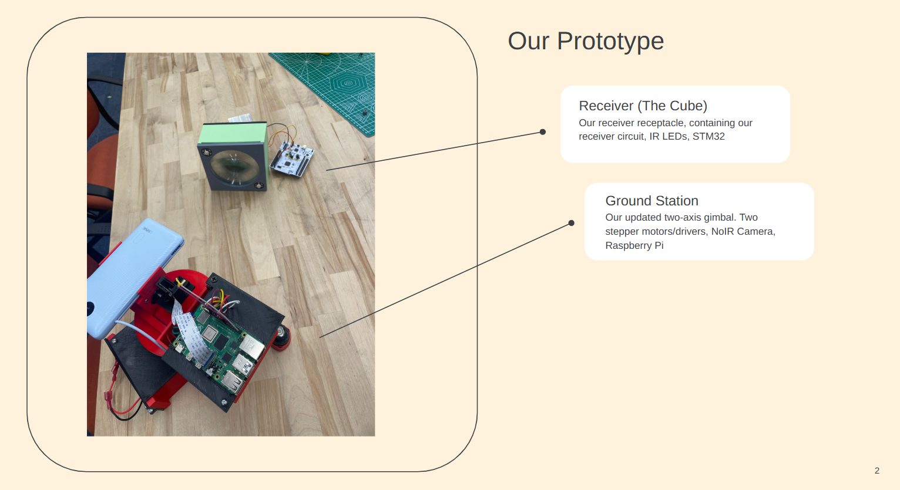
Final Project Systems
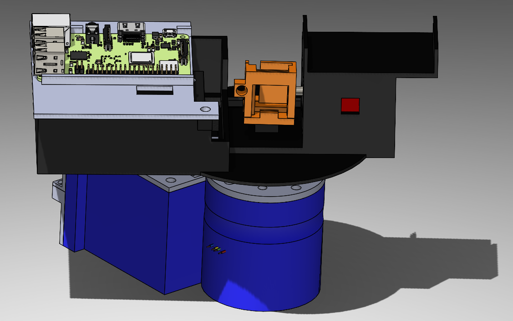
Our Ground Station
This image is the final assembly for our ground station. It is entirly 3d printed. It features holdings for two stepper motors, a raspberry pi, a lithium battery, two stepper motor drivers, a portable charger, and our camera. Our orginal model only consisted of a x and y stepper motor holder. This made the design very messy, and led to limited rotation ability in our ground station as wires were getting caught or resisting to be bent, especially the HDMI cable. To mitigate this I made holdings for the drivers, and made cut outs on compartment covers to guide where the wires go, and the covers also let the design be much more clean as it hid wires. We also originally had the Raspberry Pi on the bottom of the design, but we found the camera cable length to be a limiting factor, so we put it on top so it also stays right next to the camera holder and moves with it. I also decided to put in a lithium battery in our design to clean it even more, compared to before our stepper motors were powered by a power supply from the wall.
This image is the final assembly for our ground station. It is entirly 3d printed. It features holdings for two stepper motors, a raspberry pi, a lithium battery, two stepper motor drivers, a portable charger, and our camera. Our orginal model only consisted of a x and y stepper motor holder. This made the design very messy, and led to limited rotation ability in our ground station as wires were getting caught or resisting to be bent, especially the HDMI cable. To mitigate this I made holdings for the drivers, and made cut outs on compartment covers to guide where the wires go, and the covers also let the design be much more clean as it hid wires. We also originally had the Raspberry Pi on the bottom of the design, but we found the camera cable length to be a limiting factor, so we put it on top so it also stays right next to the camera holder and moves with it. I also decided to put in a lithium battery in our design to clean it even more, compared to before our stepper motors were powered by a power supply from the wall.
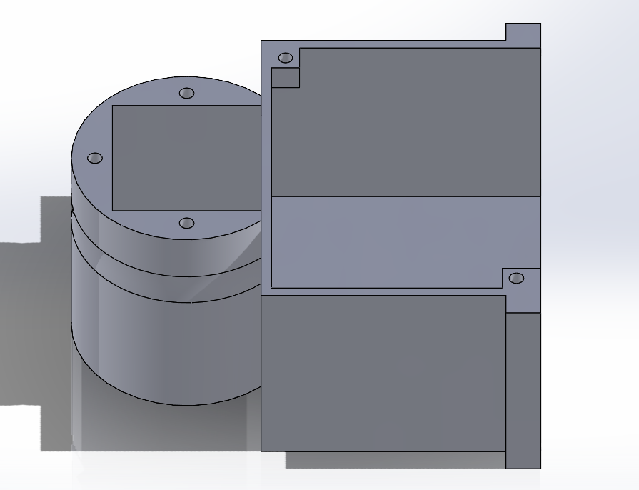
X Axis Holder
This part of the ground station holds our x-axis parts. This includes a motor driver (goes in right compartment), and our stepper motor (goes in left compartment). In the right compartment, room is also left to hold our lithium battery.
This part of the ground station holds our x-axis parts. This includes a motor driver (goes in right compartment), and our stepper motor (goes in left compartment). In the right compartment, room is also left to hold our lithium battery.
X Axis Covers
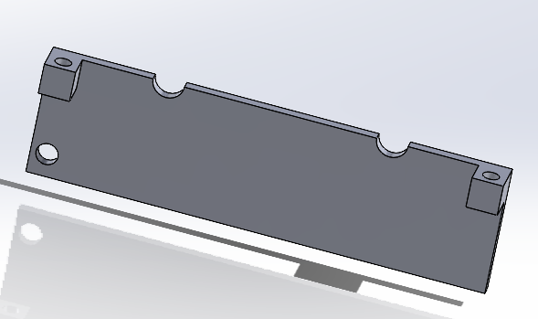
Bottom Side Cover
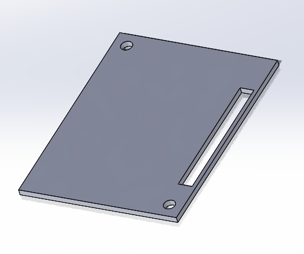
Top Cover
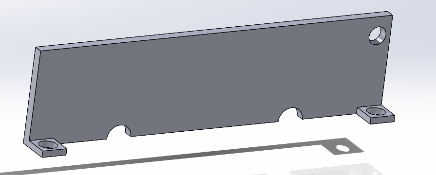
Top Side Cover
These parts all make up the
covers that go on to the x-base stepper driver. The right image is the top
side cover and the left image is the bottom side cover. These were split
into two parts to allow us to feed the power wires through the
made holes to easily let us plug and unplug our ground station. The top cover (middle image)
then covers the right compartment of the x-stepper-holder part, and comes with a hole
through it to allow us to feed the wires from the motor driver that need to connect to
the raspberry pi. All parts including the motor are
screw pressed onto our ground station.
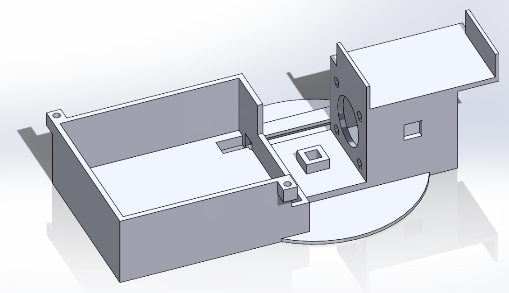
Y-Axis Holder
This is another main part that makes up our ground station. It holds our stepper motor for our y-axis movement (right compartment) for our tracking system, as well as the motor driver for it (left compartment). It also has a spot right above where the motor compartment is to put our portable charger onto. This charger then powers our Raspberry Pi.
This is another main part that makes up our ground station. It holds our stepper motor for our y-axis movement (right compartment) for our tracking system, as well as the motor driver for it (left compartment). It also has a spot right above where the motor compartment is to put our portable charger onto. This charger then powers our Raspberry Pi.
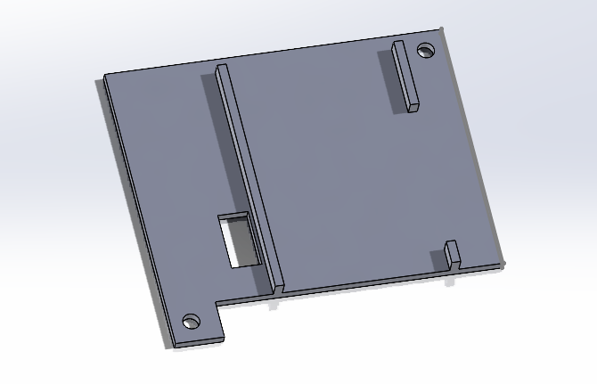
Raspberry Pi
This cover goes above the motor driver compartment to both cover the wiring around the motor driver and hold our Raspberry Pi. The cover, a lot like our top x axis cover, has a cut in it to allow for feeding wires. It then has edges that stick out to allow us to press fit the Raspberry Pi into them.
This cover goes above the motor driver compartment to both cover the wiring around the motor driver and hold our Raspberry Pi. The cover, a lot like our top x axis cover, has a cut in it to allow for feeding wires. It then has edges that stick out to allow us to press fit the Raspberry Pi into them.
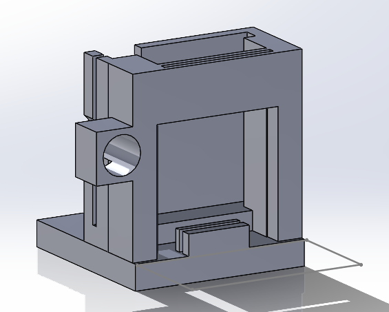
Laser and Camera Holder
This holder attaches to the rod on the y-axis stepper motor. It holds our camera, our camera filter, and our laser being one of our most important components for camera tracking. The laser is put on in a way to keep the offset between the camera and laser almost constant no matter the distance. The camera slides into the back slot, and a smaller slot in front holds our filter. On the side the laser is put in (pressed fit in) to have it move with the camera.
This holder attaches to the rod on the y-axis stepper motor. It holds our camera, our camera filter, and our laser being one of our most important components for camera tracking. The laser is put on in a way to keep the offset between the camera and laser almost constant no matter the distance. The camera slides into the back slot, and a smaller slot in front holds our filter. On the side the laser is put in (pressed fit in) to have it move with the camera.
Receiver:
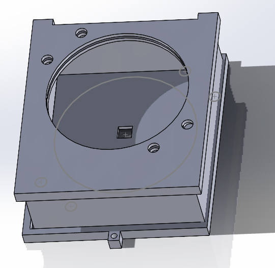
Reciever Assembly
This is the model of our main reciever. The model allows us to insert our convex lens into the circle of the reciever with a press fit down, and includes holes in the corners of the circle to allow for the wiring of our two LEDs. The box is wider on one side of the circle to allow for extra space to store the battery that powers our LEDs as well. Our original model had multiple design flaws. It lacked holes for wires for our IR leds, which made it wiring very messy as the wires went around the box. To fix this I added holes in the corners of our main circle where the IR LEDs would go. Also our original design had the lens slide into a tight compartment rather than being press fitted down by closing the cover on it. These risked damaging the lens as you slid it in, which we wanted to prevent with our new design. Lastly, to improve the design I made the extra space for the battery to limit messy wiring outside the box.
This is the model of our main reciever. The model allows us to insert our convex lens into the circle of the reciever with a press fit down, and includes holes in the corners of the circle to allow for the wiring of our two LEDs. The box is wider on one side of the circle to allow for extra space to store the battery that powers our LEDs as well. Our original model had multiple design flaws. It lacked holes for wires for our IR leds, which made it wiring very messy as the wires went around the box. To fix this I added holes in the corners of our main circle where the IR LEDs would go. Also our original design had the lens slide into a tight compartment rather than being press fitted down by closing the cover on it. These risked damaging the lens as you slid it in, which we wanted to prevent with our new design. Lastly, to improve the design I made the extra space for the battery to limit messy wiring outside the box.
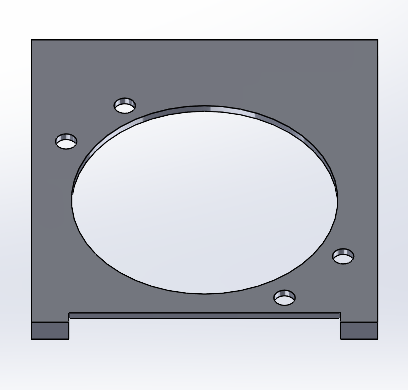
This is the top of our led that is pushed down on the main body that keeps the lens in place. It provides holes to
let the wires for LEDs go through.
This is the bottom of our led that is press fitted on to the main body. The hole is placed parallel to the
middle of the circle, where the lens focuses the laser onto, which the hole contains our photodiodes.
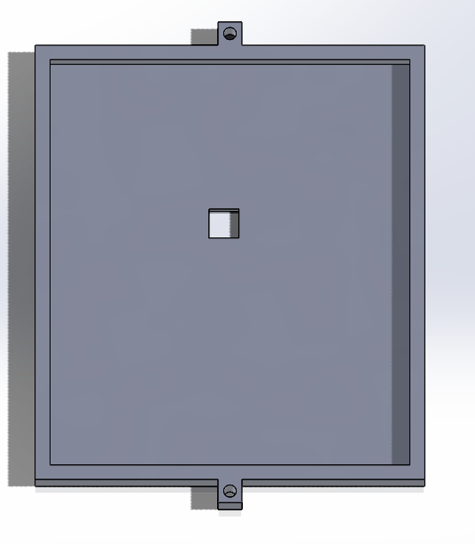
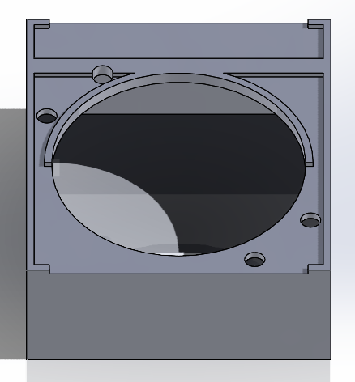
This is the middle part of our reciever that on top as a cicular hole to allow for room of the lens. It also has holes
for the IR LED wires. It is made a specifc width as the lens focuses light to a central points 50 mm behind it.